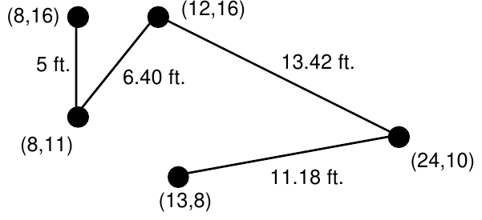
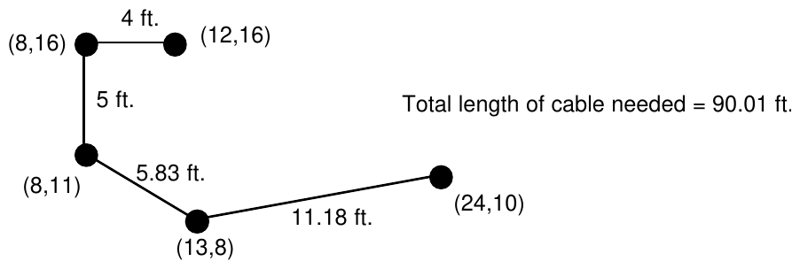

1992 ACM Scholastic Programming Contest Finals · Problem B
Computer networking requires that the computers in the network be linked. This problem considers a “linear” network in which the computers are chained together so that each is connected to exactly two others except for the two computers on the ends of the chain which are connected to only one other computer. A picture is shown below. Here the computers are the black dots and their locations in the network are identified by planar coordinates (relative to a coordinate system not shown in the picture). Distances between linked computers in the network are shown in feet.

For various reasons it is desirable to minimize the length of cable used. Your problem is to determine how the computers should be connected into such a chain to minimize the total amount of cable needed. In the installation being constructed, the cabling will run beneath the floor, so the amount of cable used to join 2 adjacent computers on the network will be equal to the distance between the computers plus 16 additional feet of cable to connect from the floor to the computers and provide some slack for ease of installation.
The picture below shows the optimal way of connecting the computers shown above, and the total length of cable required for this configuration is (4+16)+ (5+16) + (5.83+16) + (11.18+16) = 90.01 feet.

The input file will consist of a series of data sets. Each data set will begin with a line consisting of a single number indicating the number of computers in a network. Each network has at least 2 and at most 8 computers. A value of 0 for the number of computers indicates the end of input. After the initial line in a data set specifying the number of computers in a network, each additional line in the data set will give the coordinates of a computer in the network. These coordinates will be integers in the range 0 to 150. No two computers are at identical locations and each computer will be listed once.
The output for each network should include a line which tells the number of the network (as determined by its position in the input data), and one line for each length of cable to be cut to connect each adjacent pair of computers in the network. The final line should be a sentence indicating the total amount of cable used. In listing the lengths of cable to be cut, traverse the network from one end to the other. (It makes no difference at which end you start.) Use a format similar to the one shown in the sample output, with a line of asterisks separating output for different networks and with distances in feet printed to 2 decimal places.
6 5 19 55 28 38 101 28 62 111 84 43 116 5 11 27 84 99 142 81 88 30 95 38 3 132 73 49 86 72 111 0
********************************************************** Network #1 Cable requirement to connect (5,19) to (55,28) is 66.80 feet. Cable requirement to connect (55,28) to (28,62) is 59.42 feet. Cable requirement to connect (28,62) to (38,101) is 56.26 feet. Cable requirement to connect (38,101) to (43,116) is 31.81 feet. Cable requirement to connect (43,116) to (111,84) is 91.15 feet. Number of feet of cable required is 305.45. ********************************************************** Network #2 Cable requirement to connect (11,27) to (88,30) is 93.06 feet. Cable requirement to connect (88,30) to (95,38) is 26.63 feet. Cable requirement to connect (95,38) to (84,99) is 77.98 feet. Cable requirement to connect (84,99) to (142,81) is 76.73 feet. Number of feet of cable required is 274.40. ********************************************************** Network #3 Cable requirement to connect (132,73) to (72,111) is 87.02 feet. Cable requirement to connect (72,111) to (49,86) is 49.97 feet. Number of feet of cable required is 136.99.